Fizika bo'limlari
Bo'limni tanlang — pastdagi ro'yxat faqat shu mavzudagi simulyatsiyalarni ko'rsatadi.
Interaktiv simulyatsiyalar
Har bir modelda tayyor topshiriq, jonli o'lchovlar va laboratoriya jurnali bor — natijalarni jadvalga yozib, hisobotga nusxalang.
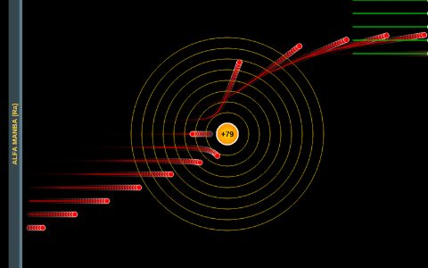
Rezerford tajribasi Alfa zarralarning oltin folgadan sochilishi. Zarra energiyasi va yadroga minimal yaqinlashuv masofasi jonli hisoblanadi. Kepler qonunlari Uchala qonun alohida bo'limda: ellips orbita, teng yuzalar va T²=a³ munosabati. Sekkizta sayyora haqiqiy ma'lumotlar bilan.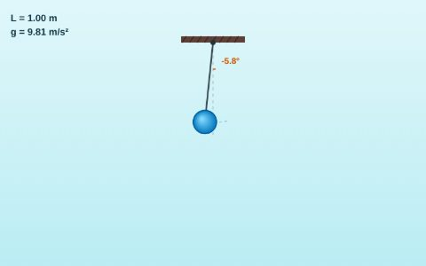
Matematik mayatnik Tebranish davri orqali erkin tushish tezlanishini aniqlang. Oltita osmoniy jismda sinab, o'lchov xatoligini baholang.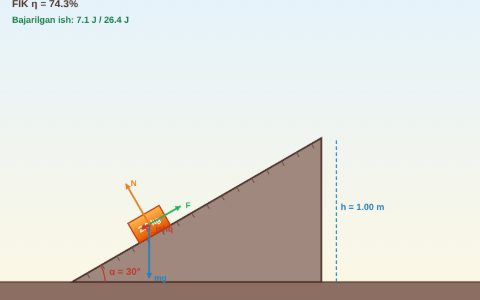
Qiya tekislik (FIK) To'rtta kuch vektori bilan foydali ish koeffitsiyenti. Energiya balansi A=Af+Aishq jonli tekshiriladi.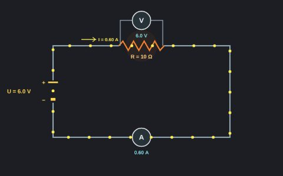
Om qonuni I = U/R. Ampermetr ketma-ket, voltmetr parallel ulangan zanjir. Zarralar tezligi tokka, rezistor qizishi quvvatga bog'liq.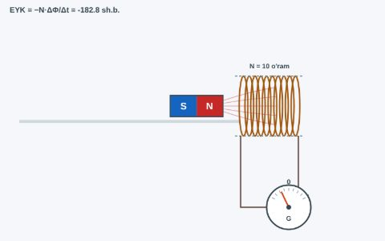
Elektromagnit induksiya Faradey qonuni va Lens qoidasi. Magnitni harakatlantiring — galvanometr strelkasi oqim o'zgarishiga javob beradi.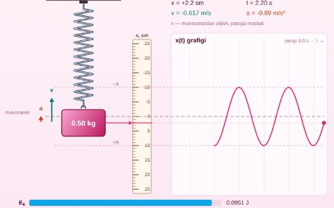
Prujinali mayatnik T = 2π√(m/k): massa va bikrlikni o'zgartirib davrni o'lchang. Kinetik va potensial energiya almashinuvi, so'nuvchi tebranish va x(t) grafigi. Burchak ostida otilgan jism Traektoriya, ko'tarilish balandligi H va uchish uzoqligi L. 30° va 60° da L tengligini, 45° da eng uzoqqa borishini tekshiring. Ideal gaz qonunlari Izotermik, izobarik va izoxorik jarayonlar: porshenli silindr, manometr, molekulalar harakati va p–V diagramma. pV = νRT.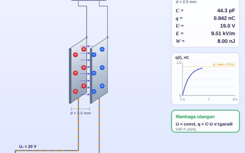
Yassi kondensator C = εε₀S/d. Qoplamalar yuzasi, oralig'i va dielektrikni o'zgartiring; manbaga ulangan va uzilgan holatlarda q, U, E, W qanday o'zgaradi?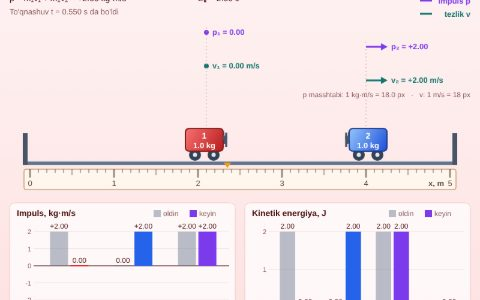
Impulsning saqlanish qonuni Ikki aravachaning elastik, noelastik va qisman elastik to'qnashuvi: impuls saqlanishini tekshiring, kinetik energiyaning qancha qismi issiqlikka aylanishini o'lchang. Yorug'likning sinishi Snellius qonuni n₁·sinα = n₂·sinβ, chegaraviy burchak va to'liq ichki qaytish. Nurlar ravshanligi Frenel formulalari bo'yicha, yorug'lik tezligi v = c/n.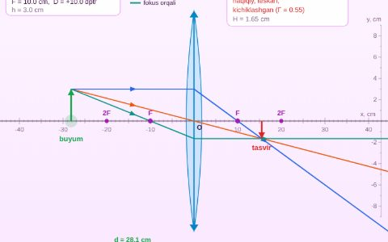
Yupqa linza Yig'uvchi va sochuvchi linzada uchta xarakterli nur bilan tasvir yasash: 1/F = 1/d + 1/f, kattalashtirish va optik kuch. Buyumni sichqoncha bilan suring.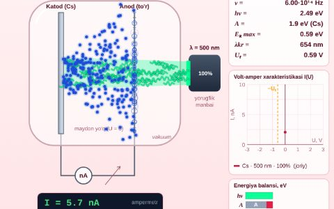
Fotoeffekt Eynshteyn tenglamasi hν = A + Ek: to'lqin uzunligi, metall va kuchlanishni o'zgartirib, qizil chegara va to'xtatuvchi kuchlanishni toping.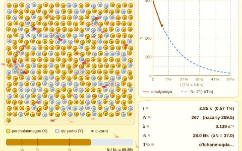
Radioaktiv yemirilish N = N₀·2−t/T½: yuzlab yadroning tasodifiy yemirilishi va statistik qonun. Yarim yemirilish davrini o'lchang, tebranishlarni kuzating.Hech narsa topilmadi. Boshqa so'z bilan qidirib ko'ring yoki filtrlarni tozalang.
O'qituvchilar uchun
Darsga tayyor materiallar: dars ishlanmalar, testlar va kutilgan natijalar.
Dars ishlanmalar
10-sinf uchun 12 ta, 11-sinf uchun 10 ta dars — PDF va tahrirlanadigan DOCX.
Ochish →Onlayn interaktiv test
15 mavzu bo'yicha 170 ta test savoli va 48 ta hisoblash masalasi. Mavzu va savollar sonini tanlang — avtomatik baholash, izohlar va mavzular tahlili bilan.
Testni boshlash →Testlar to'plami
210+ savol va masala, 15 mavzu: asosiy bilimlar, chuqur tushunish va hisoblash masalalari, javoblar kaliti bilan — chop etishga tayyor PDF.
PDF yuklab olishO'qituvchi rejimi
Har bir modelda topshiriqning kutilgan natijalari ko'rinadi. O'quvchilar ekraniga ko'rsatmang.
Yoqish →Metodika qo'llanma
Dars o'tish texnikasi, guruh ishlari va baholash mezonlari bo'yicha amaliy tavsiyalar.
PDF yuklab olishLoyiha hujjatlari
To'liq yo'riqnoma: o'rnatish, foydalanish va texnik yordam bo'yicha ma'lumotlar.
PDF yuklab olish💡 Qanday foydalanish kerak
- Mavzuga mos interaktiv modelni oching
- Panel tepasidagi 🎯 Topshiriq qadamlarini bajaring
- Har o'lchovdan keyin «O'lchovni yozish» ni bosing (yoki S)
- Jurnal ostidagi grafikda bog'lanishni tahlil qiling va «Hisobot (PDF)» ni saqlang
- Natijalarni nazariy formula bilan solishtirib xulosa chiqaring
- Onlayn test bilan bilimingizni tekshiring
⌨️ Modellarda: Space boshlash/pauza · R qayta · S o'lchovni yozish
Asosiy xususiyatlar
Maktab sharoitiga moslab yaratilgan — kompyuter sinfida ham, telefonda ham.
🔬 Haqiqiy fizika
Animatsiyalar emas — differensial tenglamalar real vaqtda yechiladi
🇺🇿 O'zbek tilida
To'liq o'zbekcha interfeys, formulalar va tushuntirishlar
📋 Laboratoriya jurnali
O'lchovlar jadvali, grafik va chiziqli tahlil, CSV (Excel) va PDF hisobot
💻 Oflayn ishlaydi
Bir marta ochilgach internetsiz ishlaydi; telefonga ilova sifatida o'rnatiladi
⛶ Proyektor uchun
Modelni bir tugma bilan to'liq ekranda ko'rsating
🌙 Qorong'i rejim
Ko'z charchamasligi uchun kunduzgi va tungi rejim